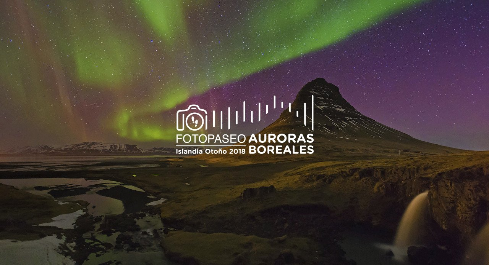

Fotopaseos es una web donde fotógrafos de todo el mundo
pueden visitar diferentes puntos del mundo realizando
tours y rallies fotográficos.En Fotopaseos creemos que cada momento es único, y sabemos todo el esfuerzo que hay detrás de una gran fotografía. Es por eso que hacemos todo lo posible para que puedas capturar con tu cámara esos instantes que no se repetirán. Llevarte al lugar adecuado en el momento preciso, ofrecer un servicio de calidad y apoyarte en lo necesario para que simplemente puedas hacer click
, esa es nuestra razón de existir.
Antes de publicar un nuevo destino fotográfico, hacemos una investigación profunda tomando en cuenta el clima, las horas de luz y sus condiciones, los permisos, las distancias, los riesgos y hasta el esfuerzo físico requerido. Después, un equipo de Fotógrafos profesionales viajan al lugar en cuestión para hacer un scouting, y esto les ayuda a comprender In Situ hasta los más mínimos detalles. Nuestro objetivo es que nuestros clientes vivan una experiencia fotográfica sin igual sin preocuparse por la logística.
Contamos también con un equipo de asesores en nuestras oficinas ubicadas en la Ciudad de México, quienes apoyarán a nuestros clientes durante el proceso de inscripción y resolverán todas sus dudas, desde preguntas enfocadas a la fotografía o dudas técnicas del viaje. También compartirán información de nuestras promociones vigentes, como pagos a meses sin intereses y descuentos preferenciales por pronto pago. ¡Acércate a nosotros y empieza a planear tu siguiente Fotopaseo!
Este otoño puedes disfrutar de un rallie fotogáfico por Islandia descubriendo las auroras boreales. Conoce todo el itinerario, recomendaciones, equipo o preparación necesarios

Para más información, visite nuestra página principal
Fotopaseos"El planeta es increíble, vamos a capturarlo"
Elementos fotogáficos